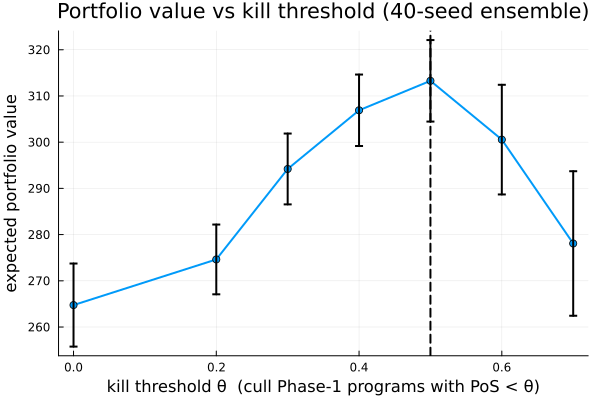

When should you kill a program?
The number. Across a contended R&D portfolio, the kill policy that maximizes expected portfolio value is cull every Phase-1 program whose probability of success falls below θ\ = 0.5. Running that policy instead of never killing is worth +48.5 ± 12.6 units of expected portfolio value (a 40-member seeded ensemble) — and pushing the threshold higher, to θ = 0.7, gives it all back and then some (−35.2 ± 18.0 versus θ\). There is a genuine interior optimum: kill too little and scarce capital leaks into programs that will never pay off; kill too much and you cull programs that would have launched.
Why this is a ReactiveDynamics question and not a spreadsheet one. The kill decision is state-contingent — whether killing a marginal program helps depends on what the freed capital does for the programs that remain, under a budget that genuinely binds. That is a system effect, and it is exactly what the engine's endogenous decision channel captures: the kill policy is a typed Rule that lives inside the model, evaluated against live state on every tick, not host code that reaches into the run from outside. Because the rule is part of the model, sweeping the threshold is a clean A/B over a serializable object — the capability that is hardest to fake in an ad-hoc discrete-event simulation, where a "policy" is usually a patch in the driver script.
This case study builds the portfolio, writes the kill rule as data, sweeps the threshold with treatment_effect, and uses the per-program ledger to see where the discipline pays.
using ReactiveDynamics
using Statistics # mean / std for the ensemble reductions
using Random # a construction-time RNG for the starting portfolio
using Plots # the inline value-vs-threshold figure
const RD = ReactiveDynamicsReactiveDynamics1. The portfolio: programs are structured tokens, capital is scarce
A program is not a count — it carries a probability of success (pos) and a lifecycle phase, and it keeps its identity as it advances. So we model it as a structured token. The kind is defined into the ReactiveDynamics module via the @register/@aagent idiom (that is where the selection and advancement machinery can see it); the four leading constructor arguments are the protocol fields (name, kind, bound-transition, history), followed by our two modeling attributes.
@register begin
@aagent BaseStructuredToken AbstractStructuredToken struct KillProjectToken
phase::Symbol # lifecycle stage — :Phase1 while in development, :Launched on success
pos::Float64 # probability of success — the quality signal the kill rule reads
end
function KillProjectToken(phase, pos)
return KillProjectToken(
"Proj" * string(rand(1:(10^9))), # name
:Project, # kind
nothing, # bound_transition
Tuple{Symbol, Float64, ReactiveDynamics.Transition}[], # past_bonds
phase,
pos,
)
end
endReactiveDynamics.KillProjectTokenThe registry maps the kind symbol to a constructor (state, fields) -> token. A declarative population, a restored checkpoint, or a rule that adds a token all resolve :Project through it — host Julia referenced by name, never carried in the model document.
const REGISTRY = Dict{Symbol, Any}(
:Project => (state, f) -> RD.KillProjectToken(get(f, :phase, :Phase1), get(f, :pos, 0.5)),
)Dict{Symbol, Any} with 1 entry:
:Project => #2A launched program is worth its probability of success times a fixed peak payoff (a stand-in for risk-adjusted NPV): a coin that lands heads with probability pos and pays PAYOFF.
const PAYOFF = 100.0100.0The model has two transitions. financing drips a fixed budget inflow each tick — deliberately thin. advance @selects a Phase-1 program, meters 3 units of budget per tick at @rate over its three-tick cycletime, and @advances it to :Launched; capacity => 2 caps concurrent development slots. Budget starts scarce (6) and refills slowly (4/tick), so with ten programs competing for two slots and a metered burn, capital is the binding constraint — every unit spent developing one program is a unit unavailable to another. budget carries a specCost so the burn registers on the per-program ledger.
Model attributes are literal (they evaluate in module scope), so the network is authored once in a builder function; the policy we vary lives in the kill rule (§2), not in the network.
function portfolio_model()
net = @reaction_network begin
@deterministic(4.0), ∅ --> budget, name => financing
@deterministic(50.0),
@select(Project, phase == :Phase1) + 3 * @rate(budget) --> @advance(phase, :Launched),
name => advance, cycletime => 3.0, probability => 1.0, capacity => 2
end
RD.register_structured_species!(net, :Project)
# Set the budget pool's initial level and unit cost by index assignment (the kwargs the macro
# cannot take as literals): scarce start, and every unit burned is a unit of cost.
bi = findfirst(==(:budget), net[:, :specName])
net[bi, :specInitVal] = 6.0
net[bi, :specCost] = 1.0
@prob_meta net tspan = 14 dt = 1.0
return net
endportfolio_model (generic function with 1 method)The starting portfolio is ten Phase-1 programs whose probabilities of success span a wide, mixed quality range — some clearly fund-worthy, some marginal, some near-hopeless. We draw them from a construction-time RNG keyed to the run's seed, so a given seed always yields the same opening portfolio: when we compare kill thresholds below, each threshold sees an identical set of programs and identical dynamics — the arms differ only in the policy.
function portfolio_from_seed(seed)
rng = MersenneTwister(seed)
return [RD.KillProjectToken(:Phase1, round(rand(rng) * 0.85 + 0.1; digits = 2)) for _ in 1:10]
endportfolio_from_seed (generic function with 1 method)2. The kill decision lives in the model, as data
Here is the whole policy. A Rule is a (guard, action, fire_mode) triple the engine evaluates once per tick against the live state. Our guard is always-on (@t() >= 0.0); the action is a SetTokens that selects every Phase-1 program whose pos is below the threshold and flips its species to :removed — a soft retire that frees the program's slot and stops any further budget from flowing to it, while leaving it in the population for audit.
kill_rule(θ) = RD.Rule(
:kill_below_pos, :(@t() >= 0.0),
RD.SetTokens(
RD.TokenPredicate(
:Project,
[RD.Clause(:phase, :(==), :(:Phase1)), RD.Clause(:pos, :(<), θ)],
),
[:species => :(:removed)],
);
fire_mode = :every_tick,
)kill_rule (generic function with 1 method)The threshold θ is an ordinary constructor argument, so a builder function can vary it — that is how we sweep the policy while holding the network fixed. Note what the rule is: a typed value drawn from a closed action whitelist (SetTokens, TokenPredicate, Clause), carrying only field names, comparison operators, and literals. It has no host-Julia body, which is why the whole model — network, portfolio, and policy — is a single eval-free document that serializes and replays as data. The decision is in the model, not in this script.
demo_rule = kill_rule(0.5)
println("kill_rule(0.5) is a ", typeof(demo_rule).name.name, " with:")
println(" guard : @t() >= 0.0 (evaluated against live state every tick)")
println(" action : ", typeof(demo_rule.action).name.name, " over a ", typeof(demo_rule.action.predicate).name.name, " (select PoS < θ, set species -> :removed)")
println(" mode : ", demo_rule.fire_mode)kill_rule(0.5) is a Rule with:
guard : @t() >= 0.0 (evaluated against live state every tick)
action : SetTokens over a TokenPredicate (select PoS < θ, set species -> :removed)
mode : every_tickA small helper surface for reading a finished run: the live token pool, and the realized portfolio value — the risk-adjusted worth of everything that reached :Launched.
livetokens(p) = collect(values(RD.inners(RD.getagent(p, "structured"))))
launched_value(p) = sum(
t.pos * PAYOFF for t in livetokens(p)
if t.phase == :Launched && RD.get_species(t) == :Project; init = 0.0
)launched_value (generic function with 1 method)One run assembles the model, its seed-matched portfolio, and a kill rule at threshold θ. The run is fully determined by (model, population, rule, seed) — nothing reaches in from outside.
run_arm(θ; seed) = begin
p = ReactionNetworkProblem(
portfolio_model(); seed = seed, registry = REGISTRY,
population = portfolio_from_seed(seed), rules = [kill_rule(θ)],
)
simulate(p)
return p
endrun_arm (generic function with 1 method)3. Sweeping the threshold: which kill policy wins?
A single run is one draw of a stochastic process, so we compare distributions. ensemble runs 40 members, member k seeded deterministically from hash((root_seed, k)), so a member is reproducible regardless of how many we run. We build one ensemble per candidate threshold — same 40 seeds across every arm, so a given member sees the same portfolio and the same dynamics under each policy — and reduce each with summarize.
arm(θ) = ensemble(s -> run_arm(θ; seed = s); nseed = 40, root_seed = 2026)
θs = [0.0, 0.2, 0.3, 0.4, 0.5, 0.6, 0.7]
arms = Dict(θ => arm(θ) for θ in θs) # build each arm once; reuse below
stats = Dict(θ => summarize(arms[θ], launched_value) for θ in θs)
means = [stats[θ].mean for θ in θs]
sems = [stats[θ].sem for θ in θs]
θ_star = θs[argmax(means)]
println("Expected portfolio value by kill threshold (40-member ensemble):")
for θ in θs
marker = θ == θ_star ? " <- value-maximizing" : ""
println(" θ = ", θ, " (kill PoS < ", θ, ") : ", round(stats[θ].mean; digits = 1), " ± ", round(stats[θ].sem; digits = 1), marker)
end
println("value-maximizing threshold θ* = ", θ_star)Expected portfolio value by kill threshold (40-member ensemble):
θ = 0.0 (kill PoS < 0.0) : 264.8 ± 9.0
θ = 0.2 (kill PoS < 0.2) : 274.6 ± 7.5
θ = 0.3 (kill PoS < 0.3) : 294.2 ± 7.7
θ = 0.4 (kill PoS < 0.4) : 306.9 ± 7.7
θ = 0.5 (kill PoS < 0.5) : 313.3 ± 8.8 <- value-maximizing
θ = 0.6 (kill PoS < 0.6) : 300.6 ± 11.9
θ = 0.7 (kill PoS < 0.7) : 278.1 ± 15.6
value-maximizing threshold θ* = 0.5The two decisions a portfolio manager actually faces are should we kill at all? and how aggressive should the bar be? treatment_effect answers each as an unpaired difference of means with a standard error — the A/B signal between two policies over the shared seeds.
te_vs_none = treatment_effect(arms[0.0], arms[θ_star], launched_value)
te_vs_over = treatment_effect(arms[θ_star], arms[0.7], launched_value)
println()
println("Δ portfolio value, disciplined kill (θ* = ", θ_star, ") vs never killing:")
println(" never kill (θ=0.0) : ", round(te_vs_none.baseline; digits = 1))
println(" kill at θ* = ", θ_star, " : ", round(te_vs_none.deal; digits = 1))
println(" Δ : +", round(te_vs_none.delta; digits = 1), " (± ", round(te_vs_none.se; digits = 1), " SE)")
println("Δ, over-aggressive (θ=0.7) vs θ*: ", round(te_vs_over.delta; digits = 1), " (± ", round(te_vs_over.se; digits = 1), " SE)")
Δ portfolio value, disciplined kill (θ* = 0.5) vs never killing:
never kill (θ=0.0) : 264.8
kill at θ* = 0.5 : 313.3
Δ : +48.5 (± 12.6 SE)
Δ, over-aggressive (θ=0.7) vs θ*: -35.2 (± 18.0 SE)Plotting expected value against the threshold makes the interior optimum unmistakable — value climbs as discipline removes hopeless programs, peaks where the marginal program killed is exactly break-even, then falls as the bar starts culling programs that would have launched:
plt = plot(
θs, means; yerror = sems, marker = :circle, lw = 2, legend = false,
xlabel = "kill threshold θ (cull Phase-1 programs with PoS < θ)",
ylabel = "expected portfolio value", title = "Portfolio value vs kill threshold (40-seed ensemble)",
)
vline!([θ_star]; lw = 2, ls = :dash, color = :black)
4. Where the discipline pays: the per-program ledger
Why does killing help when the budget refills anyway? Because the budget is scarce and metered: every unit spent developing a doomed program is a unit that never reaches a program that could launch. The per-program ledger attributes capital to individual programs during the run, so we can quantify the leak on a no-kill run — how much of the scarce budget lands on programs a θ* rule would have culled at t = 0.
p_nokill = run_arm(0.0; seed = hash((2026, 1)))
led = program_ledger(p_nokill)
pos_by_name = Dict(RD.getname(t) => t.pos for t in livetokens(p_nokill))
total_capital = sum(led.cost_incurred)
doomed_capital = sum(
r.cost_incurred for r in eachrow(led) if get(pos_by_name, r.program, 1.0) < θ_star; init = 0.0
)
println("No-kill run — capital attributed by the per-program ledger:")
println(" total budget burned : ", round(total_capital; digits = 1))
println(
" spent on sub-θ* (PoS < ", θ_star, ") programs : ", round(doomed_capital; digits = 1),
" (", round(100 * doomed_capital / total_capital; digits = 0), "% of the scarce budget)"
)
println("Under the θ* policy that capital is redirected: the same programs are retired at t = 0, so")
println("their slots and their budget flow to survivors instead — which is the +", round(te_vs_none.delta; digits = 1), " value gain.")No-kill run — capital attributed by the per-program ledger:
total budget burned : 62.0
spent on sub-θ* (PoS < 0.5) programs : 10.7 (17.0% of the scarce budget)
Under the θ* policy that capital is redirected: the same programs are retired at t = 0, so
their slots and their budget flow to survivors instead — which is the +48.5 value gain.Reading the result
The value-maximizing kill policy is θ* = 0.5 — cull any Phase-1 program whose probability of success is below 50% — and it is worth +48.5 ± 12.6 expected portfolio value over never killing, a gain several times its standard error. The threshold sweep shows this is a real interior optimum, not a monotone "kill more is better": at θ = 0.7 the policy destroys value relative to θ*, because it culls programs that would have launched. The ledger says why the optimum sits where it does — on a no-kill run, 17% of the scarce budget is burned on programs a θ* rule would have retired at the outset, and redirecting exactly that capital to survivors is the gain.
What carries beyond the specific number is its kind: a state-contingent policy evaluated inside a timed, resource-contended model, swept as a serializable object rather than patched into a driver. The kill rule is data — it round-trips through the same eval-free document as the network and the portfolio, so a policy comparison is reproducible from (model, seed) and auditable after the fact. That is the endogenous decision channel: decisions are part of the system being modeled, and the framework can therefore tell you not just what a portfolio does, but what a decision about it is worth.